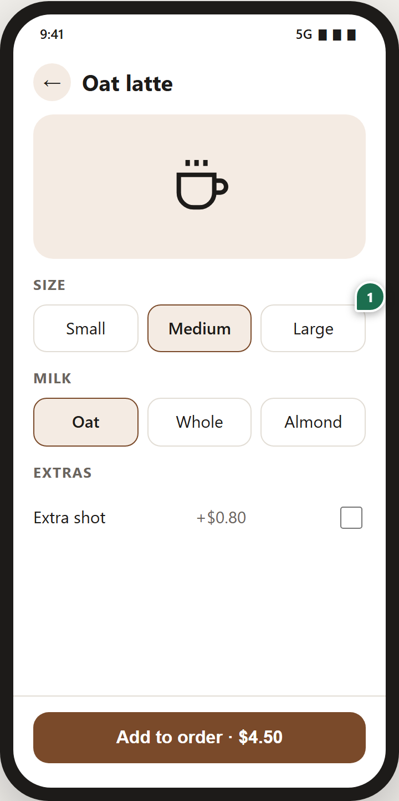
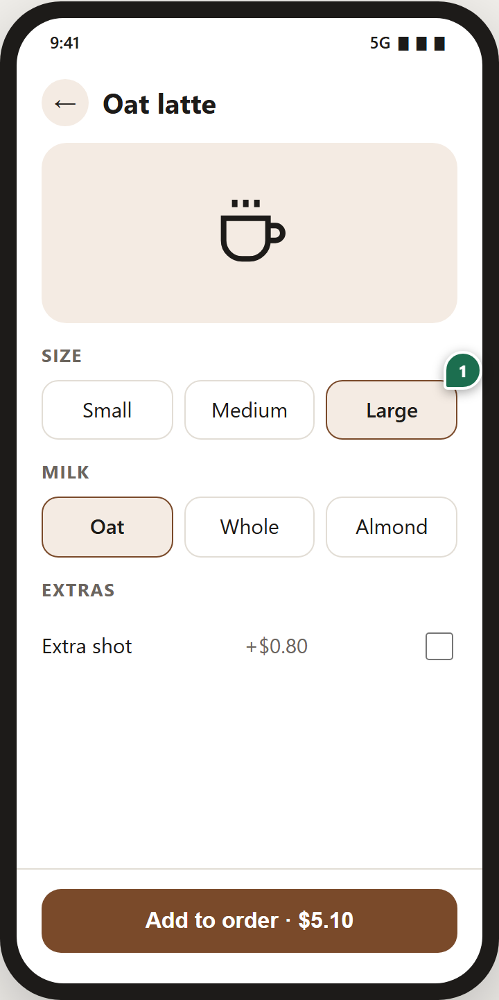

ai-prototype-kit
Comment on it.
AI revises it.
your-project.pages.dev/coffee-order
Same link, every version.
v1 · reviewed

D
Dina
on Large
Default to Large, most people pick it
AI revised
> /revise-from-comments
1 | Dina |
Done
: Large is now selected by default
v2 · same link
